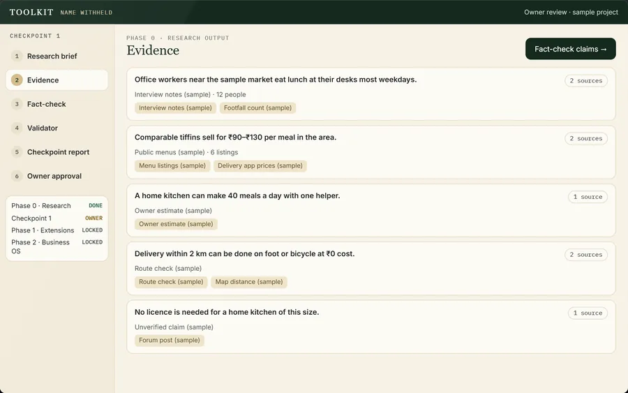
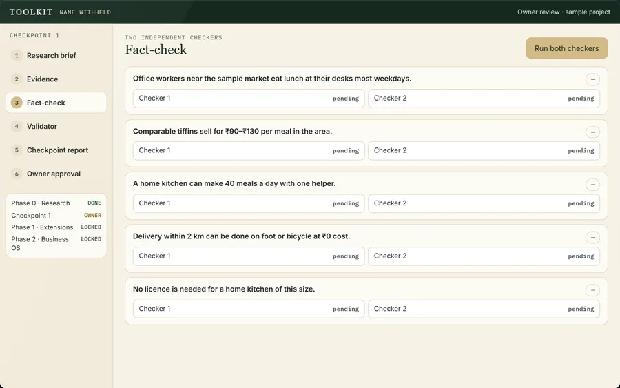
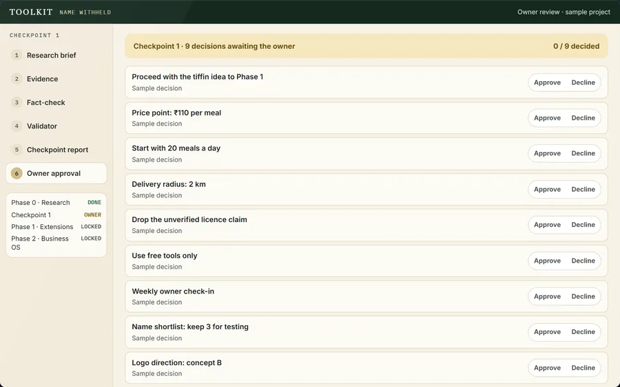

Case study · Research · AI toolkit
Research toolkit
Researches a business idea and fact-checks every claim before anything is built.
Open the live demo Start a project like this
- Type
- Business research workspace
- Budget
- ₹0, no paid services
- Checks
- Two checkers per claim, 14 tests
- Status
- Delivered. Product name withheld.
Inside the product. Real screens from the working demo.

Evidence
Every claim the research makes, with the sources behind it.

Two checkers per claim
A claim survives only when both agree. A refuted claim is removed before the report is written.

Owner approval
The next phase stays locked until the owner approves the checkpoint.
The problem
New business ideas often skip from a hunch to spending money. The research is thin and a few numbers are guessed.
By the time anyone checks them, a logo, a domain and a few tools have already been paid for.
What we built
The toolkit reverses the order. Research comes first, every claim is checked by two independent checkers, a validator runs 14 tests, and nothing is built or bought until the owner has read the evidence and approved it.
Decisions that matter
- If any of the 14 tests fails, no checkpoint is produced.
- The checkpoint report is a PDF that lists the decisions the owner has to make.
- A split between the two checkers is kept only as a marked estimate, or dropped.
- The whole programme runs on a budget of ₹0.
About the demo
The product’s real name is withheld. The brief, sources and decisions in the demo are fictional examples, not client work.